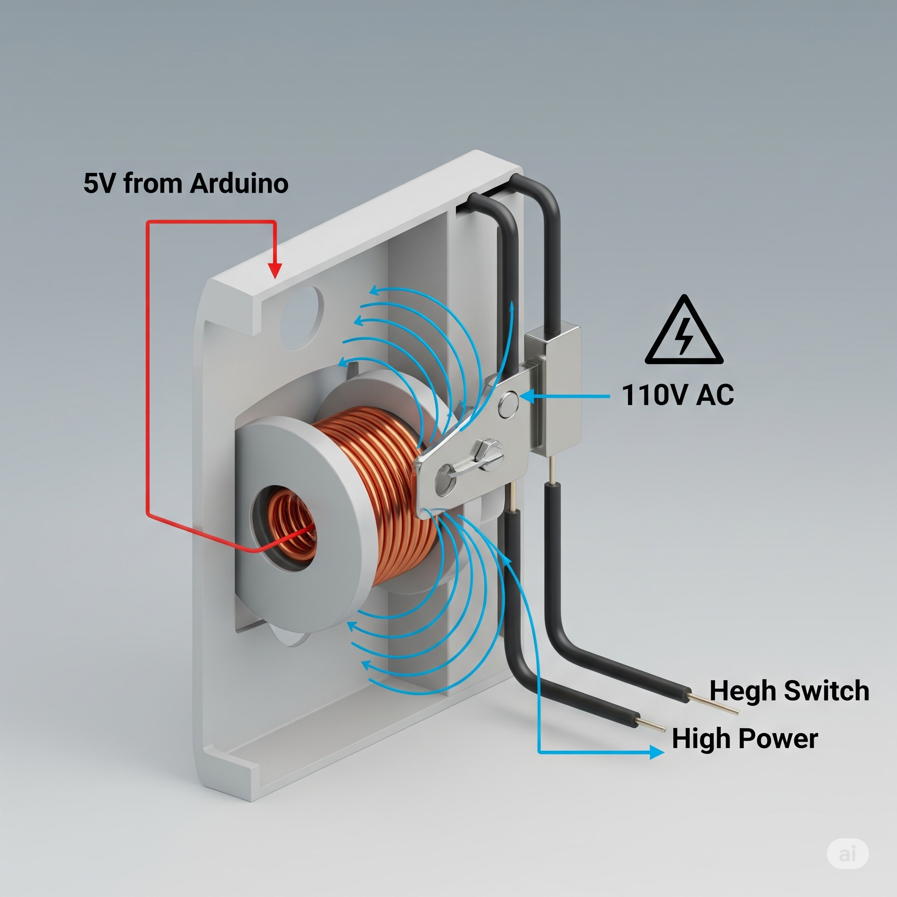
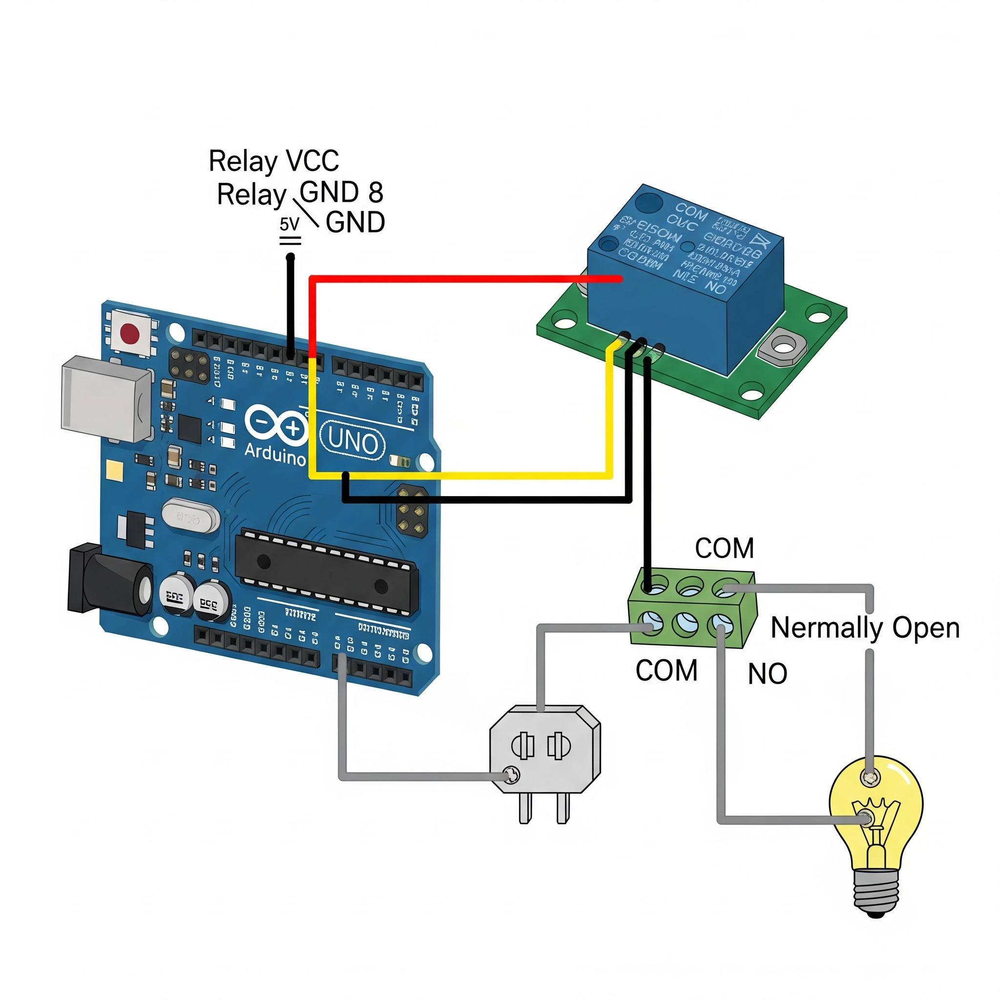
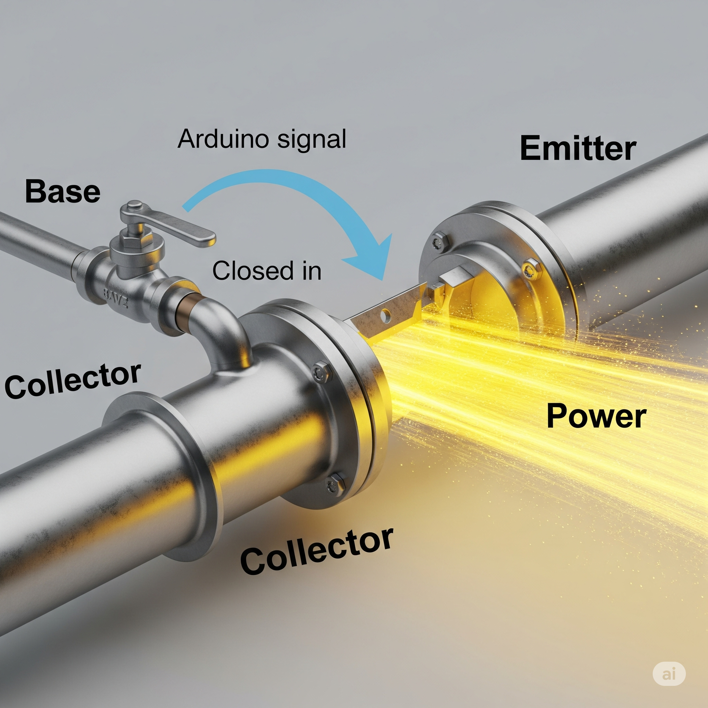
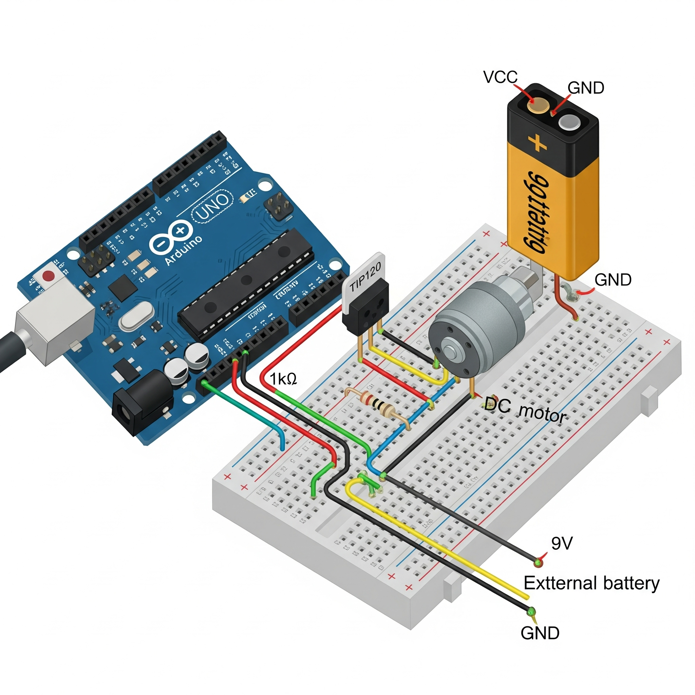

Relés y Transistores
Lección 1: ¿Por qué necesitamos "ayudantes"?
Imagina que tu Arduino es una persona. Su voz (la señal de 5V de un pin) es perfecta para hablar con componentes pequeños como un LED. Pero si quieres mover una roca gigante (como un motor grande o una lámpara de 110V), tu voz no es suficiente. Necesitas un "ayudante" que escuche tu pequeña voz y active una palanca gigante.
Los **relés** y los **transistores** son esos ayudantes. Son interruptores que podemos controlar con la pequeña señal de Arduino para manejar componentes que requieren mucha más potencia (voltaje y corriente).
Lección 2: El Relé - El Interruptor Electromecánico
Un relé es como un interruptor de luz, pero en lugar de usar tu dedo, usas un electroimán. Funciona así:
- Arduino envía una pequeña corriente a una bobina dentro del relé.
- Esta corriente crea un campo magnético (se convierte en un imán).
- El imán atrae una pequeña palanca metálica.
- Esta palanca cierra un interruptor en un circuito completamente separado y de alta potencia.
La gran ventaja es el **aislamiento**: el circuito de Arduino y el circuito de alta potencia nunca se tocan eléctricamente, lo que protege a tu placa.
Funcionamiento Interno
Circuito de Ejemplo
Lección 3: El Transistor - El Interruptor Electrónico
Un transistor es un interruptor de estado sólido, sin partes móviles. La mejor analogía es una **llave de agua digital**:
- Tiene tres conexiones: **Base**, **Colector** y **Emisor**.
- Imagina que el agua (corriente de alta potencia) quiere fluir desde el Colector al Emisor, pero la llave está cerrada.
- Al enviar una pequeña señal de Arduino a la **Base** (la manija de la llave), la llave se abre y permite que una gran cantidad de corriente fluya del Colector al Emisor.
La gran ventaja es la **velocidad**. Como no tiene partes móviles, puede encenderse y apagarse miles de veces por segundo, lo que es perfecto para controlar la velocidad de un motor con PWM (`analogWrite`).
Concepto de Funcionamiento
Circuito de Ejemplo
¡Advertencia de Seguridad!
Cuando trabajes con relés para controlar voltajes de pared (AC, como 110V o 220V), ten **extremo cuidado**. Estos voltajes son peligrosos. Asegúrate de que todas las conexiones de alta potencia estén bien aisladas y nunca toques el circuito mientras esté conectado a la corriente.
¡Desafío Práctico!
Usa un transistor y `analogWrite` para crear un control de velocidad para un ventilador o motor.
Ir al DesafíoPrueba tu Conocimiento
¿Entendiste la diferencia entre un relé y un transistor? ¡Demuéstralo en el quiz!
Iniciar Quiz